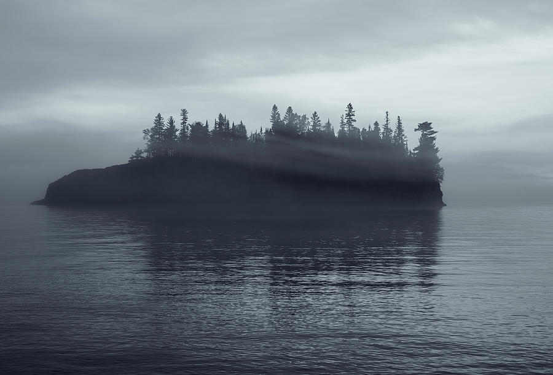
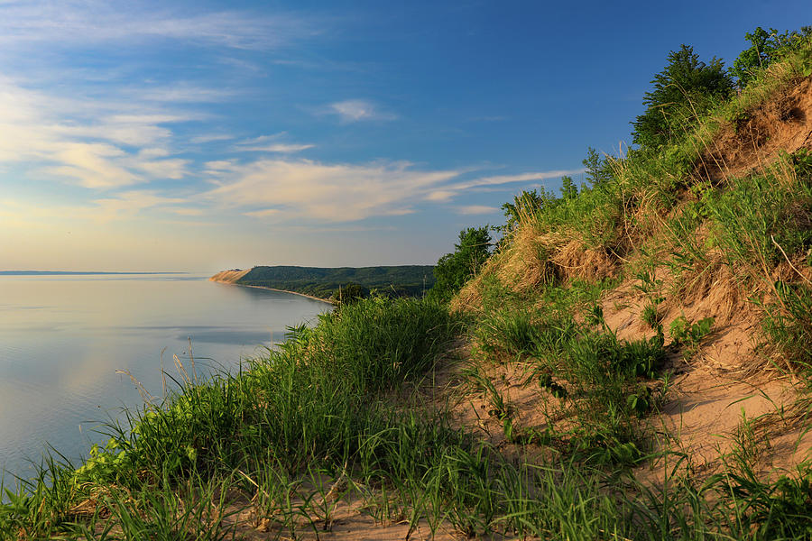
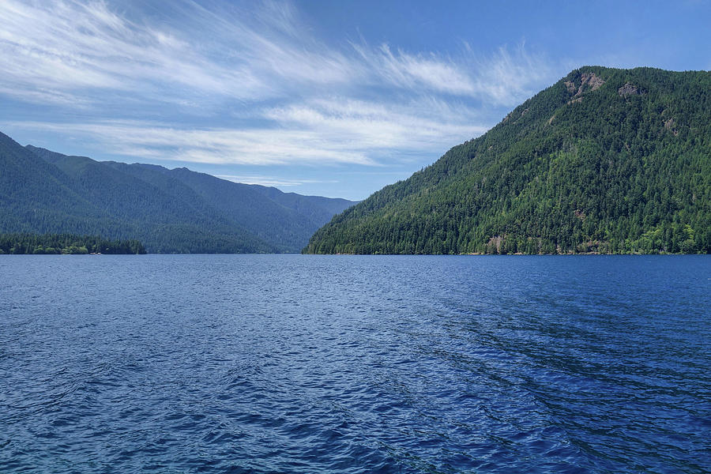
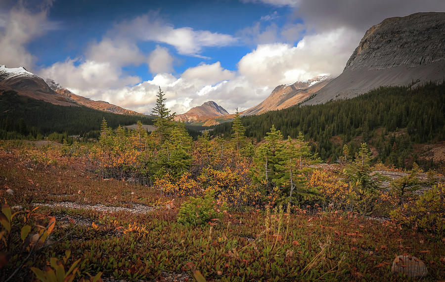

Quiet landscape photography prints for interiors.
These selected pieces represent the core Quiet Earth mood: stillness, atmosphere, natural texture, and calm visual scale. Each card includes a short field note and links directly to the print page.

Autumn Beginnings Wyoming Landscape
Warm autumn color and open western atmosphere for lodge, hospitality, and quiet residential interiors.
I was drawn to the early fall color here before the scene became too busy. The open Wyoming horizon gives the image room to breathe.
Best for: Living rooms, cabins, fireplace walls, mountain homes, lodge-inspired spaces.
Available as: Framed fine art paper, canvas, acrylic, metal, and paper prints.
Shop This Print →
Morning Light Schwabacher's Landing
Soft mountain light, reflective water, and natural greens for modern residential and quiet luxury interiors.
Schwabacher's Landing is all about waiting for the wind to stay down. This frame has the quiet reflection and soft Teton light I was hoping for.
Best for: Quiet luxury living rooms, bedrooms, offices, and refined residential interiors.
Available as: Framed fine art paper, canvas, acrylic, metal, and paper prints.
Shop This Print →
Turnagain Arm Alaska
Atmospheric Alaska mountain and water landscape for calm modern interiors.
Driving Turnagain Arm is one of those Alaska experiences where the light changes every few minutes. I kept this one because the mountains stay big, but the color remains quiet.
Best for: Bedrooms, offices, reading rooms, lake houses, and calm modern interiors.
Available as: Framed fine art paper, canvas, acrylic, metal, and paper prints.
Shop This Print →
Lily Pond, Chugach National Forest
Cool atmospheric tones and restorative stillness for wellness-oriented interiors.
I stopped here because the pond was doing exactly what I wanted — holding the mountain shape without a lot of extra distraction.
Best for: Wellness rooms, bedrooms, fireplaces, therapy offices, and quiet living spaces.
Available as: Framed fine art paper, canvas, acrylic, metal, and paper prints.
Shop This Print →
Foggy Hyatt Lane
A quiet fog-filled country lane for bedrooms, wellness spaces, and calming corridors.
Cades Cove is at its best before the road fills up. The fog on Hyatt Lane gave this scene the simple, honest mood I always look for there.
Best for: Bedrooms, hallways, therapy spaces, guest rooms, and quiet residential interiors.
Available as: Framed fine art paper, canvas, acrylic, metal, and paper prints.
Shop This Print →
Denali Highway Reflection
A dramatic mountain lake reflection with scale, stillness, and natural depth.
The Denali Highway can feel empty in the best way. This was one of those pull-off moments where the lake made the whole landscape feel larger and quieter.
Best for: Home offices, larger living rooms, lodge interiors, and statement walls.
Available as: Framed fine art paper, canvas, acrylic, metal, and paper prints.
Shop This Print →
Badlands Spring Morning
Warm texture and soft natural color for modern rustic interiors.
The Badlands can be harsh, but spring softens the edges. I liked how this scene kept the earth color and texture without becoming too loud.
Best for: Modern rustic homes, offices, dining rooms, and warm neutral interiors.
Available as: Framed fine art paper, canvas, acrylic, metal, and paper prints.
Shop This Print →
Teton Mountain Reflection
A refined Teton reflection scene with blue tones and quiet autumn texture.
I keep coming back to Teton reflections because they give the mountains space. This one feels clean, cool, and easy to place in a room.
Best for: Bedrooms, living rooms, offices, cabins, and quiet luxury interiors.
Available as: Framed fine art paper, canvas, acrylic, metal, and paper prints.
Shop This Print →
Moody Lake Superior Island
Soft fog, dark island shapes, and quiet water for refined rooms that need atmosphere.
Lake Superior mornings can be all mood. I liked the way the fog slid across this little island and left just enough trees showing through.
Best for: Bedrooms, offices, lake houses, reading rooms, and calm modern walls.
Available as: Framed fine art paper, canvas, acrylic, metal, and paper prints.
Shop This Print →
Sleeping Bear Dunes Overlook
Warm dune grasses, Lake Michigan distance, and quiet shoreline color for residential interiors.
Sleeping Bear is known for the big overlook, but I liked this quieter edge of the dune with grass, warm light, and the shoreline falling away in the distance.
Best for: Lake homes, living rooms, bedrooms, coastal-inspired spaces, and warm neutral interiors.
Available as: Framed fine art paper, canvas, acrylic, metal, and paper prints.
Shop This Print →
Lake Crescent Olympic National Park
Clean blue water, forested mountains, and open lake atmosphere for fresh calm interiors.
Lake Crescent has that deep blue water that almost doesn't look real. I kept this frame simple because the line of water and forest did enough.
Best for: Bedrooms, lake houses, offices, wellness rooms, and brighter modern interiors.
Available as: Framed fine art paper, canvas, acrylic, metal, and paper prints.
Shop This Print →
Fall Landscape Canadian Rockies
Autumn color, mountain scale, and layered forest texture for statement walls and lodge interiors.
Visiting the Canadian Rockies in fall presents endless photography opportunities. I liked this one because the foreground color grounds the whole valley.
Best for: Cabins, lodge interiors, living rooms, offices, hospitality spaces, and large statement walls.
Available as: Framed fine art paper, canvas, acrylic, metal, and paper prints.
Shop This Print →